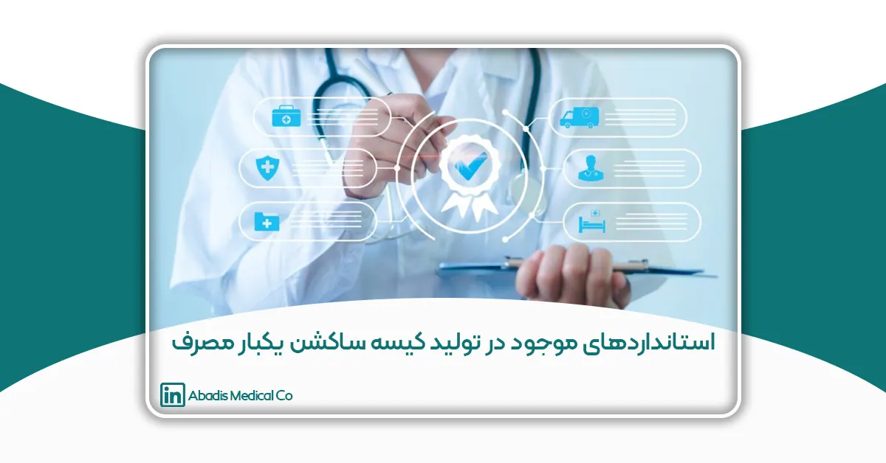
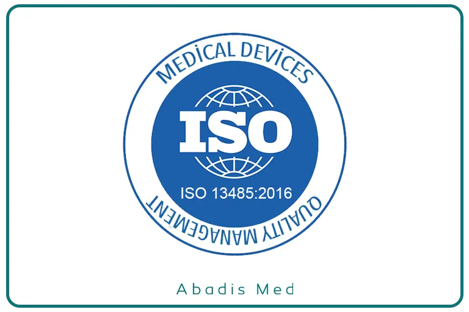
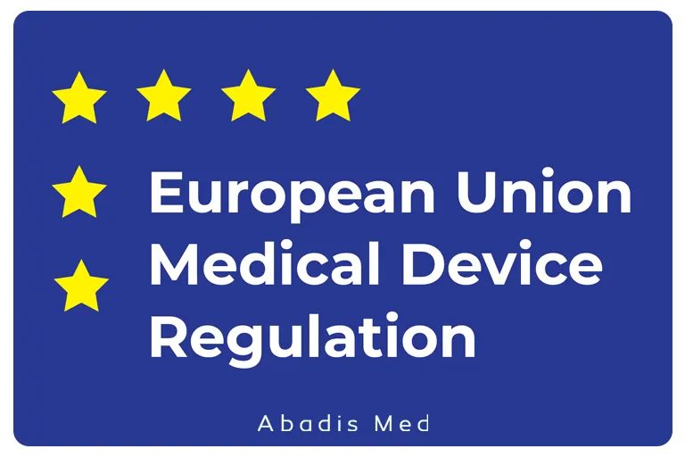

مقدمه
امروزه با پیشرفت علوم پزشکی و گسترش خدمات درمانی، استفاده از تجهیزات پزشکی یکبار مصرف به عنوان بخشی جداییناپذیر از فرآیند درمان و جراحی مطرح شده است. یکی از این تجهیزات، کیسه ساکشن یکبار مصرف است که نقش حیاتی در جمعآوری، ذخیره و دفع ایمن مایعات و ترشحات پزشکی ایفا میکند. این وسیله به ظاهر ساده، در عمل میتواند تأثیر مستقیمی بر ایمنی بیمار، کنترل عفونتهای بیمارستانی و حتی حفاظت از محیط زیست داشته باشد.
در گذشته، استفاده از مخازن و سیستمهای ساکشن دائمی رایج بود که نیاز به شستوشو و ضدعفونی داشتند. این فرآیند نه تنها وقتگیر و پرهزینه بود، بلکه در صورت انجام ناقص، میتوانست به انتشار عوامل بیماریزا و افزایش خطر ابتلا به عفونتهای بیمارستانی منجر شود. به همین دلیل، تولید و استفاده از کیسههای ساکشن یکبار مصرف به عنوان یک راهکار ایمن، بهداشتی و مقرونبهصرفه در بسیاری از مراکز درمانی جهان گسترش یافته است.
با این حال، استفاده ایمن و مؤثر از این محصول تنها در صورتی امکانپذیر است که مطابق با استانداردهای ملی و بینالمللی طراحی و تولید شود. استانداردها مجموعهای از الزامات فنی و کیفی هستند که رعایت آنها تضمین میکند محصول نهایی از نظر ایمنی، کارایی، دوام، و سازگاری زیستی در بالاترین سطح ممکن باشد. این الزامات، علاوه بر تضمین سلامت بیمار و کادر درمان، نقش مهمی در کاهش اثرات زیستمحیطی و حمایت از توسعه پایدار ایفا میکنند.
در سطح جهانی، استانداردهایی همچون ISO 13485:2016)سیستم مدیریت کیفیت تجهیزات پزشکی(، ISO 14971 (مدیریت ریسک در تجهیزات پزشکی)، و مقررات MDR اتحادیه اروپا، چارچوبهای جامعی را برای تولیدکنندگان فراهم میآورند تا محصولاتی مطابق با نیازهای بازار و الزامات قانونی عرضه کنند. در ایران نیز سازمان ملی استاندارد (ISIRI) و اداره کل تجهیزات پزشکی (IMED) به عنوان مراجع رسمی، الزامات خاصی را برای تولید، واردات و عرضه کیسههای ساکشن یکبار مصرف تدوین و اجرا میکنند.
هدف این مقاله، بررسی جامع و دقیق استانداردهای موجود در زمینه تولید کیسه ساکشن یکبار مصرف است؛ از چارچوبهای بینالمللی و اروپایی گرفته تا ضوابط ملی ایران. با مرور این استانداردها، تولیدکنندگان، واردکنندگان و مراکز درمانی میتوانند آگاهی بیشتری نسبت به الزامات فنی و قانونی کسب کنند و با رعایت آنها، گامی مهم در جهت ارتقاء کیفیت خدمات درمانی، کاهش عفونتها و حفاظت از محیط زیست بردارند.
استانداردهای مورد نیاز برای تولید کیسه ساکشن یکبار مصرف
ISO 13485:2016 – سیستم مدیریت کیفیت تجهیزات پزشکی
ISO 13485:2016 یکی از مهمترین استانداردهای بینالمللی در حوزه تولید تجهیزات پزشکی از جمله کیسه ساکشن یکبار مصرف است. این استاندارد چارچوبی جامع برای طراحی، تولید، نصب و خدمات پس از فروش تجهیزات پزشکی فراهم میکند تا تضمین کند محصولات تولید شده مطابق با الزامات قانونی و نیازهای مشتریان هستند.
چرا ISO 13485 برای تولید کیسه ساکشن یکبار مصرف مهم است؟
ایمنی بیمار و پرسنل درمان: کیسه ساکشن مستقیماً با مایعات و ترشحات بدن بیماران در تماس است، بنابراین کیفیت ساخت و کنترل فرآیند تولید آن بسیار حیاتی است تا هیچ آلودگی یا نقصی در محصول وجود نداشته باشد.
تضمین کیفیت: این استاندارد روی مستندسازی دقیق کلیه مراحل تولید، کنترل مواد اولیه، بازبینی کیفیت، و بازخوردهای مشتریان تأکید دارد که باعث کاهش خطا و افزایش کیفیت محصول نهایی میشود.
تطابق با مقررات: بسیاری از کشورهای جهان برای واردات و فروش تجهیزات پزشکی الزام دارند تولیدکنندگان دارای گواهینامه ISO 13485 باشند.
نکات کلیدی ISO 13485:2016
مستندسازی کامل فرایندها:
هر مرحله از تولید کیسه ساکشن از خرید مواد اولیه، مونتاژ، کنترل کیفیت تا بستهبندی باید مستند و قابل ردیابی باشد. این کار باعث میشود در صورت بروز مشکل، به سرعت دلیل آن شناسایی و اصلاح شود.
- مدیریت ریسک:
تولیدکننده موظف است تمام ریسکهای مرتبط با محصول را شناسایی و برنامهریزی برای کاهش آنها داشته باشد. این موضوع برای کیسه ساکشن اهمیت بالایی دارد چون با سلامت انسان سروکار دارد.
- بازرسی و کنترل کیفیت:
ایجاد نقاط بازرسی در فرآیند تولید برای تضمین اینکه محصول با مشخصات فنی و بهداشتی مطابقت دارد. از جمله تستهای کنترل ضخامت کیسه، دوام در برابر نشتی و آزمایشهای استریلیزاسیون.
- آموزش پرسنل:
پرسنل درگیر در تولید باید آموزش دیده باشند و با استانداردها و دستورالعملهای تولید آشنا باشند.
- بازخورد مشتری و بهبود مستمر:
بررسی شکایات و بازخوردهای بازار و بهکارگیری آنها برای بهبود فرآیند تولید و محصول.
الزامات مهم برای کیسه ساکشن یکبار مصرف بر اساس ISO 13485:2016
- کیسه باید از مواد بیخطر و سازگار با بدن ساخته شود.
- فرآیند تولید باید در محیطهای کنترل شده و پاک انجام شود تا از آلودگی محصول جلوگیری شود.
- قابلیت استریل شدن به روشهای متداول (مانند اتیلن اکساید یا گاما) باید تضمین شود.
- کیسهها باید دارای دوام کافی برای نگهداری مایعات عفونی بدون نشتی باشند.
- مستندات کامل مربوط به هر دسته تولید برای ردیابی و کنترل کیفیت باید حفظ شود.

استاندارد ISO 10993 – ارزیابی زیستی تجهیزات پزشکی
استاندارد ISO 10993 مجموعهای از دستورالعملهای بینالمللی برای ارزیابی زیستی مواد و تجهیزات پزشکی است که به منظور تضمین ایمنی و سازگاری مواد با بافتهای زنده بدن تدوین شده است. این استاندارد به منظور جلوگیری از بروز واکنشهای نامطلوب مانند سمیت، حساسیت و التهاب در بیماران اهمیت بالایی دارد.
کاربرد استاندارد ISO 10993 در کیسههای ساکشن یکبار مصرف
کیسههای ساکشن یکبار مصرف معمولاً در تماس با مایعات و بافتهای بدن هستند. با این حال، اغلب این کیسهها به صورت غیر استریل تولید و استفاده میشوند؛ چرا که در بسیاری از کاربردهای معمول، استریل بودن کیسه ساکشن ضروری نیست. بنابراین، در شرایط فعلی، الزامات کامل ISO 10993 برای این نوع محصولات به طور معمول اعمال نمیشود.
آینده تولید کیسههای ساکشن استریل
در مقابل، در صورت توسعه محصولاتی مانند کیسههای ساکشن استریل که برای مصارفی حساستر مانند جمعآوری بافتها و چربیهای بدن طراحی شدهاند و نیاز به حفظ استریلیته دارند، رعایت دقیق استاندارد ISO 10993 امری حیاتی خواهد بود. در چنین محصولاتی، ارزیابیهای زیستی شامل تستهای سمیت، حساسیتزایی و آزمونهای استریلیزاسیون به طور کامل و دقیق اجرا میشود تا ایمنی بیماران تضمین گردد.
استانداردهای ملی ایران (ISIRI) و نقش آن در تولید کیسه ساکشن یکبار مصرف
سازمان ملی استاندارد ایران (ISIRI)، نهاد رسمی مسئول تدوین، توسعه و نظارت بر استانداردهای ملی در ایران است. هدف اصلی این سازمان تضمین کیفیت، ایمنی، و سلامت محصولات و خدمات ارائه شده در بازار ایران است، از جمله تجهیزات پزشکی مانند کیسههای ساکشن یکبار مصرف.
اهمیت استانداردهای ISIRI برای کیسه ساکشن یکبار مصرف
- تضمین کیفیت مواد اولیه: ISIRI مشخص میکند که مواد اولیه باید دارای ویژگیهایی مانند سازگاری با مایعات بدن، غیرسمی بودن، عدم ایجاد واکنشهای آلرژیک و مقاومت فیزیکی مناسب باشند. برای مثال، جنس کیسهها معمولاً باید از پلیمرهای خاصی باشد که با استانداردهای بهداشتی ایران منطبق است.
- استانداردهای فنی و عملکردی: ISIRI به وضوح پارامترهای فنی مانند ضخامت کیسه، مقاومت در برابر پاره شدن یا نشت، مقاومت در برابر فشارهای مکانیکی و حرارتی، و قابلیت اطمینان در شرایط مختلف را تعریف میکند. این پارامترها به حفظ کارایی کیسه ساکشن در محیط بیمارستان کمک میکند.
- بهداشت و بستهبندی: استانداردهای ISIRI به نحوه بستهبندی و نگهداری کیسههای ساکشن نیز توجه دارد. بستهبندی باید از نظر بهداشتی مطمئن بوده و اطلاعات مهمی مانند تاریخ تولید، شماره سری ساخت، شرایط نگهداری و هشدارهای ایمنی را داشته باشد.
- کنترل و آزمایشهای کیفیت: محصولات باید تحت آزمایشات کیفی دقیق قرار بگیرند، مانند تست نشت، تست کشش، و آزمونهای زیستسازگاری؛ ISIRI چارچوبی برای انجام این آزمایشات تعیین کرده و شرکتها موظف به انجام آنها هستند.
فرآیند تدوین و بهروزرسانی استانداردهای ISIRI
سازمان استاندارد ایران با همکاری کارشناسان، تولیدکنندگان، و مراکز تحقیقاتی، استانداردها را بهروزرسانی میکند تا همگام با پیشرفتهای فناوری و الزامات بینالمللی پیش رود. این فرآیند شامل:
- بررسی استانداردهای جهانی و انطباق آنها با شرایط داخلی
- جمعآوری بازخورد از تولیدکنندگان و مصرفکنندگان
- آزمایشهای میدانی و آزمایشگاهی گسترده
مزایای تطبیق با استانداردهای ISIRI برای تولیدکنندگان
اعتماد بیشتر مصرفکنندگان: محصولاتی که مطابق با ISIRI تولید میشوند، مورد اعتماد بیمارستانها و مراکز درمانی داخلی قرار میگیرند.
تسهیل فرایندهای نظارتی و قانونی: داشتن گواهینامههای ISIRI به تسهیل اخذ مجوزهای فروش و توزیع کمک میکند.
گامی موثر برای صادرات: انطباق با ISIRI که با استانداردهای بینالمللی هماهنگ است، درهای بازارهای خارجی را باز میکند.
مقررات تجهیزات پزشکی اروپا (MDR 2017/745)
مقررات MDR یکی از جامعترین و سختگیرانهترین قوانین در زمینه تولید، کنترل کیفیت، بازاریابی و نظارت بر تجهیزات پزشکی در اتحادیه اروپا است. این مقررات جایگزین دستورالعملهای قبلی MDD شده و با هدف افزایش ایمنی بیماران و بهبود کیفیت محصولات پزشکی تصویب شده است.
۱. دامنه و حوزه کاربرد MDR
- MDR شامل همه تجهیزات پزشکی میشود، از جمله دستگاههای الکترونیکی، ابزارهای جراحی، و مواد مصرفی پزشکی مانند کیسههای ساکشن یکبار مصرف.
- این قانون برای تجهیزاتی که در تماس مستقیم یا غیرمستقیم با بدن انسان هستند، اجرا میشود، که کیسههای ساکشن به دلیل استفاده در محیط پزشکی و تماس با مایعات بدن جزو این تجهیزات قرار میگیرند.
۲. طبقهبندی تجهیزات پزشکی تحت MDR
تجهیزات پزشکی بر اساس سطح ریسک طبقهبندی میشوند:
- کلاس I: کمترین ریسک (مثلاً تجهیزات غیرتهاجمی ساده)
- کلاس IIa و IIb: ریسک متوسط تا بالا (مانند تجهیزات متصل به بدن یا سیستمهای پیچیدهتر)
- کلاس III: بالاترین ریسک (مانند ایمپلنتها و تجهیزات حیاتی)
- کیسههای ساکشن معمولاً در کلاس I یا IIa قرار میگیرند، اما این طبقهبندی ممکن است بر اساس کاربرد و ویژگیهای خاص محصول تغییر کند.
۳. الزامات اصلی MDR برای تولید کیسههای ساکشن
ارزیابی انطباق (Conformity Assessment):
تولیدکنندگان باید نشان دهند که محصولاتشان با الزامات فنی و قانونی MDR مطابقت دارد.
بسته به کلاس محصول، این ارزیابی ممکن است شامل آزمایشهای بالینی، بررسیهای فنی و بازرسیهای مستقل توسط نهادهای اعلامشده (Notified Bodies) باشد.
سیستم مدیریت کیفیت:
تولیدکننده باید یک سیستم مدیریت کیفیت قوی داشته باشد که بر اساس استاندارد ISO 13485 توسعه یافته باشد.
این سیستم شامل کنترل کیفیت در تمامی مراحل تولید، ارزیابی ریسک، مدیریت شکایات و مستندسازی دقیق است.
مستندسازی فنی (Technical Documentation):
تمامی مدارک مربوط به طراحی، تولید، تستها، ارزیابی ریسک و نتایج بالینی باید آماده و قابل ارائه به مراجع نظارتی باشد.
این مستندات به نهادهای نظارتی اجازه میدهد تا ایمنی و کارایی محصول را ارزیابی کنند.
برچسبگذاری و اطلاعات محصول:
محصول باید دارای برچسب CE باشد که نشاندهنده انطباق با MDR است.
اطلاعات کاملی در مورد نحوه استفاده، هشدارها، شرایط نگهداری و تاریخ انقضا باید روی بستهبندی درج شود.
نظارت پس از بازاریابی (Post-Market Surveillance):
تولیدکنندگان ملزم به رصد و گزارش مشکلات، عوارض و بازخوردهای کاربران هستند.
این فرآیند باعث میشود که در صورت بروز خطر یا نقص، اقدامات اصلاحی به سرعت انجام شود.
۴. چرا MDR مهم است؟
افزایش ایمنی بیمار:
تضمین میکند که تجهیزات پزشکی قبل از عرضه به بازار تحت ارزیابیهای دقیق قرار میگیرند.
افزایش شفافیت:
فرآیندهای تولید و کیفیت به صورت مستند و قابل پیگیری است.
حمایت از تولیدکنندگان:
با رعایت MDR، تولیدکنندگان میتوانند به راحتی وارد بازارهای اتحادیه اروپا شوند و اعتماد مشتریان را جلب کنند.
پیشگیری از ریسکهای قانونی:
عدم رعایت MDR میتواند منجر به جریمههای سنگین، ممنوعیت فروش محصول و آسیب به اعتبار شرکت شود.
۵. چالشها و فرصتها برای تولیدکنندگان کیسه ساکشن
چالشها:
سرمایهگذاری بالا در ارزیابی بالینی و پیادهسازی سیستمهای مدیریت کیفیت.
مستندسازی گسترده و پیچیده.
فرصتها:
دسترسی به بازار بزرگ اروپا.
ارتقای کیفیت و اعتبار محصول.
افزایش اعتماد مشتریان و مراکز درمانی.

چارچوب نظارتی IMED در تولید کیسه ساکشن یکبار مصرف
در حالی که استانداردهای فنی مانند ISO 13485 یا MDR الزامات دقیق و قابل آزمایش برای تولید کیسههای ساکشن یکبار مصرف را تعریف میکنند، IMED (Iran Medical Equipment Directive) به عنوان یک چارچوب نظارتی و قانونی در ایران عمل میکند که تضمین میکند تمامی تجهیزات پزشکی، از جمله کیسههای ساکشن، مطابق با قوانین و مقررات وزارت بهداشت، درمان و آموزش پزشکی کشور تولید، ثبت و توزیع شوند.
برخلاف استانداردهای فنی که بیشتر بر جنبههای کیفی، ایمنی و عملکرد محصول متمرکز هستند، IMED شامل دستورالعملهای مربوط به مراحل ثبت محصول، صدور مجوز، مستندسازی، و پایش پس از عرضه میباشد. بنابراین، تولیدکنندگان باید علاوه بر رعایت استانداردهای فنی بینالمللی و ملی، فرایندهای خود را با الزامات IMED تطبیق دهند تا محصولشان در بازار ایران قانونی و قابل عرضه باشد.
همچنین IMED تلاش میکند که هماهنگی لازم با استانداردهای بینالمللی حفظ شود تا محصولات ایرانی قابلیت رقابت در بازارهای خارجی را نیز داشته باشند.
نتیجهگیری
تولید کیسه ساکشن یکبار مصرف، به عنوان یکی از تجهیزات پزشکی حیاتی، نیازمند رعایت مجموعهای از استانداردهای ملی و بینالمللی است تا هم ایمنی بیمار تضمین شود و هم کیفیت محصول به بالاترین حد ممکن برسد. استانداردهایی مانند ISO 13485:2016 به عنوان پایهای برای سیستمهای مدیریت کیفیت در تولید تجهیزات پزشکی، نقش کلیدی در تضمین کیفیت و انطباق با مقررات ایفا میکنند. همچنین، رعایت استانداردهای ملی ایران (ISIRI) اطمینان میدهد که محصولات تولید شده مطابق با نیازها و شرایط بازار داخلی و استانداردهای فنی کشور باشند.
از سوی دیگر، مقررات جامع و سختگیرانه مقررات تجهیزات پزشکی اتحادیه اروپا (MDR) مسیر ورود به بازارهای جهانی را هموار کرده و باعث افزایش سطح ایمنی و کیفیت تجهیزات پزشکی میشود. این مقررات بر مستندسازی فنی، ارزیابی ریسک و نظارت پس از فروش تاکید ویژه دارند که از بروز مشکلات احتمالی جلوگیری میکند.
اهمیت رعایت این استانداردها نه تنها در حفاظت از سلامت بیماران و کاربران تجهیزات پزشکی است، بلکه باعث افزایش اعتماد مشتریان، توسعه بازارهای بینالمللی و ارتقای جایگاه تولیدکنندگان در صنعت پزشکی میشود. به همین دلیل، شناخت دقیق و اجرای کامل این استانداردها برای تولیدکنندگان کیسه ساکشن یکبار مصرف ضروری و حیاتی است.
در نهایت، با توجه به روند رو به رشد و تغییرات مداوم در حوزه مقررات تجهیزات پزشکی، بهروزرسانی مداوم دانش و انطباق با آخرین استانداردها کلید موفقیت در این صنعت حساس و پر رقابت خواهد بود.
منابع
- ISO 13485:2016 — Medical devices — Quality management systems — Requirements for regulatory purposes, International Organization for Standardization (ISO).
- ISIRI Standards — Institute of Standards and Industrial Research of Iran, www.isiri.gov.ir
- Medical Device Regulation (MDR) (EU) 2017/745, European Commission.
- Available at: https://ec.europa.eu/health/md_sector/overview_en
- World Health Organization (WHO), Medical Devices: Managing the Mismatch, 2010.
- Notified Bodies Guidelines and Technical Documentation Requirements for Medical Devices, European Union.
- S. Food and Drug Administration (FDA), Medical Device Overview.
- International Medical Device Regulators Forum (IMDRF) — documents and guidance.